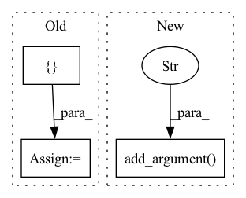

Pattern ID :13940
Before Change
parser.add_argument("--exclude_bias_n_norm", action="store_true")
// scheduler
SUPPORTED_SCHEDULERS = [
"reduce",
"warmup_cosine",
"step",
"exponential",
"none"After Change
// The learning rate will only be scaled considering the number of devices in each process.
// If each gpu corresponds to each process, you should pass --num_nodes_horovod N_GPUS to properly scale the lr.
// You can also manually scale your lr if you are not sure, by checking your logs.
parser.add_argument("--num_nodes_horovod" , default=None, type=int)
return parent_parser
@propertyIn pattern: SUPERPATTERN
Frequency: 5
Non-data size: 3
Instances Fragment ID: 46375719
Project Name: vturrisi/contrastive-learning
Commit Name: 379df0c9e7dfae24c046955f0f1c02e096f90bd5
Time: 2022-06-10
Author: vt.turrisi@gmail.com
File Name: solo/methods/base.py
M Class Name: BaseMethod
N Class Name: BaseMethod
M Method Name: add_model_specific_args(1)
N Method Name: add_model_specific_args(1)
M Parent Class: pl.LightningModule
N Parent Class: pl.LightningModule
M File Name: solo/methods/base.py
N File Name: solo/methods/base.py
M Start Line: 300
M End Line: 343
N Start Line: 299
N End Line: 353
Before Change
pre=paddle.load(r"./cifar10.pdparams")
paddle_model.load_dict(pre)
x = paddle.randn([ 32, 512 = paddle.to_tensor(x)
out_paddle = paddle_model(x_paddle, c=paddle.randint(0, 10, [32]))
gen_imgs=paddle.multiply(out_paddle,paddle.to_tensor(127.5))After Change
parser.add_argument("-cfg", type=str, default="./configs/styleformer_cifar10.yaml")
parser.add_argument("-pretrained", type=str, default="./lsun.pdparams")
parser.add_argument("-num_out_images", type=int, default=16)
parser.add_argument("-out_folder" , type=str, default="./out_images_lsun")
parser.add_argument("-dataset", type=str, default=None)
parser.add_argument("-batch_size", type=int, default=None)
parser.add_argument("-image_size", type=int, default=None) Fragment ID: 46375718
Project Name: br-idl/paddlevit
Commit Name: d078be9519159835796c1ad2e475a4a3e2e5d558
Time: 2021-08-18
Author: xperzy@gmail.com
File Name: gan/Styleformer/generate.py
M Class Name: AnonimousClass
N Class Name: AnonimousClass
M Method Name: main(0)
N Method Name: main(0)
M Parent Class:
N Parent Class:
M File Name: gan/Styleformer/generate.py
N File Name: gan/Styleformer/generate.py
M Start Line: 31
M End Line: 55
N Start Line: 33
N End Line: 76
Before Change
print("model type:", type(model))
// store statistics of train/test
training_s_statistic = []
testing_s_statistic = []
testing_t_statistic = []
// start training over epochsAfter Change
parser.add_argument("--load_model", default=None, type=None,
help="load pretrained model (default None)")
parser.add_argument("--adapt_domain" , default=True, type=bool,
help="argument to compute coral loss (default True)")
args = parser.parse_args()
// create dataloaders (Amazon --> source, Webcam --> target) Fragment ID: 46375716
Project Name: agrija9/deep-unsupervised-domain-adaptation
Commit Name: 81f3ed3b9d549ae9ea6cecfae39471ef6aa6ad0d
Time: 2020-03-13
Author: agrija9@gmail.com
File Name: main.py
M Class Name: AnonimousClass
N Class Name: AnonimousClass
M Method Name: main(0)
N Method Name: main(0)
M Parent Class:
N Parent Class:
M File Name: main.py
N File Name: main.py
M Start Line: 75
M End Line: 150
N Start Line: 38
N End Line: 167
Before Change
args = parser.parse_args()
print(args)
data_config = {
"mesh_samples": args.mesh_samples
}
nn_config = {
"r1": args.r1,
"r2": args.r2,After Change
parser.add_argument("--panel_n_layers", "-pl", help="number of layers in panel decoder", type=int, default=3)
parser.add_argument("--r1", "-r1", help="size of second PN++ layer radius", type=float, default=1.5)
parser.add_argument("--r2", "-r2", help="size of first PN++ layer radius", type=float, default=5)
parser.add_argument("--net_seed" , "-ns", help="random seed for net initialization", type=float, default=100)
args = parser.parse_args()
print(args)
Fragment ID: 46375722
Project Name: maria-korosteleva/garment-pattern-estimation
Commit Name: cac967b6646953f5b15793b5e04cbe033856e073
Time: 2020-08-10
Author: mariako@kaist.ac.kr
File Name: nn/train.py
M Class Name: AnonimousClass
N Class Name: AnonimousClass
M Method Name: get_values_from_args(0)
N Method Name: get_values_from_args(0)
M Parent Class:
N Parent Class:
M File Name: nn/train.py
N File Name: nn/train.py
M Start Line: 21
M End Line: 38
N Start Line: 12
N End Line: 39
Before Change
parser.add_argument("--offline", action="store_true")
// optimizer
SUPPORTED_OPTIMIZERS = [ "sgd", "adam"After Change
// extra args for resnet
parser.add_argument("--zero_init_residual", action="store_true")
// extra args for vit
parser.add_argument("--patch_size" , type=int, default=16)
// general train
parser.add_argument("--batch_size", type=int, default=128)
parser.add_argument("--lr", type=float, default=0.3) Fragment ID: 46375721
Project Name: vturrisi/contrastive-learning
Commit Name: 22a52fe78789216bdcf636844070d1d11ec5f198
Time: 2021-09-13
Author: vt.turrisi@gmail.com
File Name: solo/methods/base.py
M Class Name: BaseMethod
N Class Name: BaseMethod
M Method Name: add_model_specific_args(1)
N Method Name: add_model_specific_args(1)
M Parent Class: pl.LightningModule
N Parent Class: pl.LightningModule
M File Name: solo/methods/base.py
N File Name: solo/methods/base.py
M Start Line: 182
M End Line: 202
N Start Line: 193
N End Line: 219